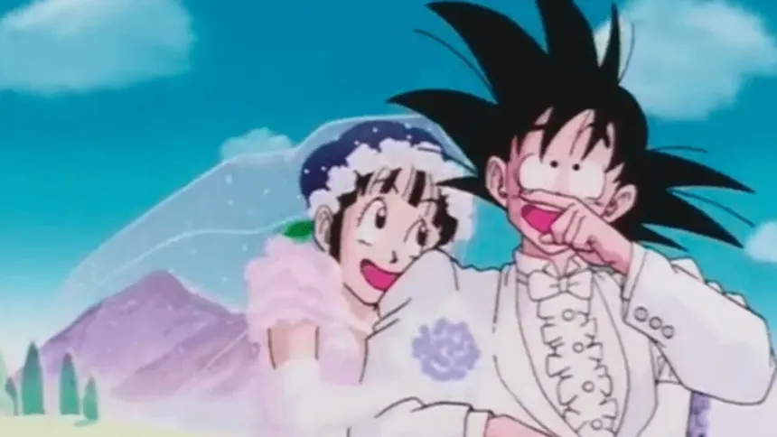

Sobre mi
Esta página es inspirada en ti bonita para que sepas que juampis sabe querer
Flor de lotoAquí tienes a un loco obsesionado contigo
Eres mi llaverito porque haces que te lleve en mis pensamientos a dónde quiera que vaya 🪷
la parejita "pikachu & flaquito"

Mi Tik Tok
Para que visites mi Tik TokMi Monchis
Porque hariamos buena pareja
Los PROS
- Seríamos la parejita fit mas envidiable
- Yo quiero ser tú pareja, amigo, cómplice, amante, tú lugar seguro y confidente
- Seré más joven pero tendrás a un poeta, programador, actuario, pedagogo, romántico empedernido, bueno pal fut, deportista, gymrat, bailador, pintor, dibujante, apapachante, cariñoso, tranquilo, juguetón y más para ti...
Poemas que te quiero dedicar
No sere un poeta pero tú me inspiras a escribir mensajes, notitas y frases bonitas al compartir este tiempo contigo.
Algunos mensajes que me has inspirado
<Ella>: Ella es divertida, coqueta, amigable, poco tolerante.<Despierta poesía>: Cuando te mire por primera vez sentí la nobleza en tú mirada y la dulzura de tú sonrisa, resplandeciente entre todas las personas, tú ser emano una profundidad en tus ojos que me invitaba a descubrir todo acerca de ti, todo aquello que pudiera conocer para intentar hacerte feliz en cada momento, con cada palabra, con cada ocurrencia, porque ver y pensar cómo se van reflejando las comisuras de esa hermosa sonrisa se ha convertido en lo más bello de mi día.<Magia>: Y al salir de la noche y buscar la estrella más brillante me di cuenta que estaba perdido, no estaba en el cielo, sino que estaba frente a mis ojos y se ilumina cada que sonríe<Dicha>: Quiero que seas dichosa al estar conmigo<Te quiero>: Eres inspiración y admiración, me encanta conocerte y compartir mi presente